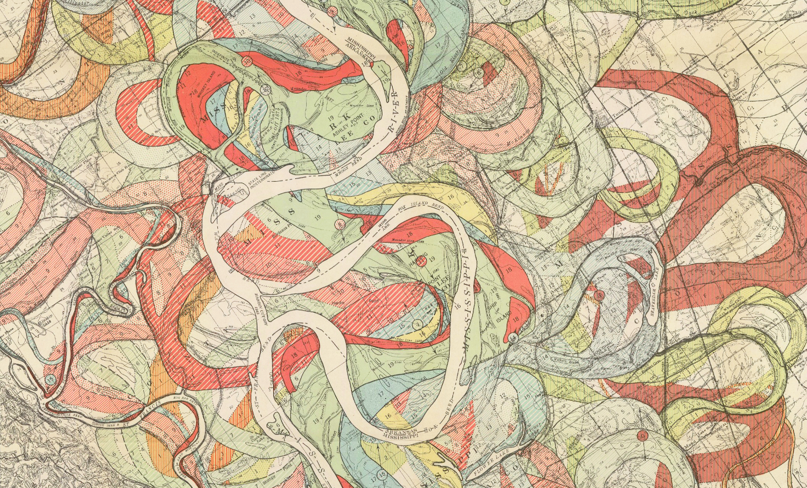
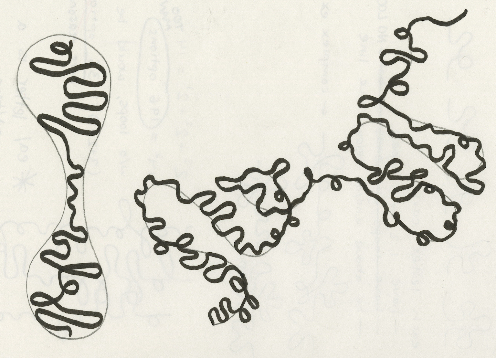
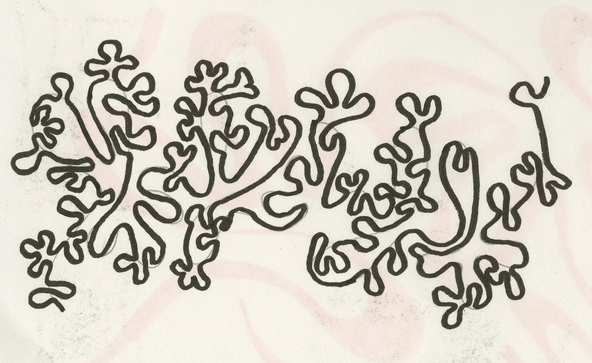
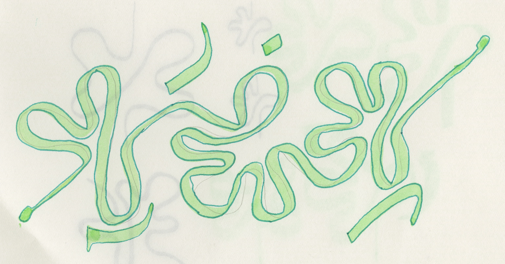

ELI HARRELL
"Writing, Not Saying"
a hand ~ 2D project
To create a writing system for an imaginary language, I didn't look to any existing
script, but rather to a fascinating map which I had seen. The story continues below.
click images to view them at full size.
| Harold Fisk's The Alluvial Valley of the Lower Mississippi River (1944). |  |
| Thinking about the meander. |

|
| An iterative formal process for establishing rules of the imaginary loopy language. |

|
|
Writing as image-making. Space-filling calligraphy (top left) and fractal calligraphy (other two). |

 |
| A sample of the final script from a (fictional) beautiful, legible manuscript. |  |